Vivre entre Cévennes et Mont Lozère
Dix-neuf communes, de la Vallée Française au Pont de Montvert.
Démarches, petite enfance, santé, transports, déchets, logement : tout ce que la communauté de communes fait pour vous, au quotidien.
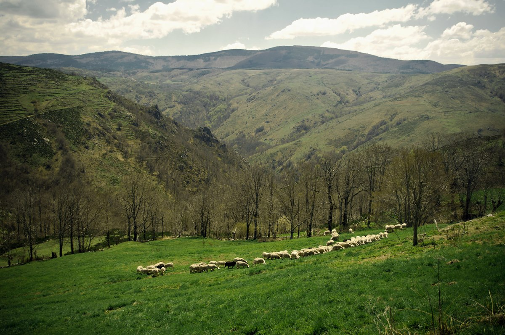
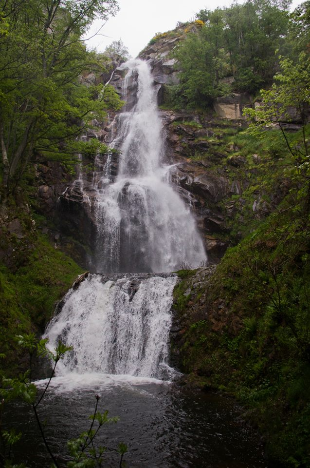
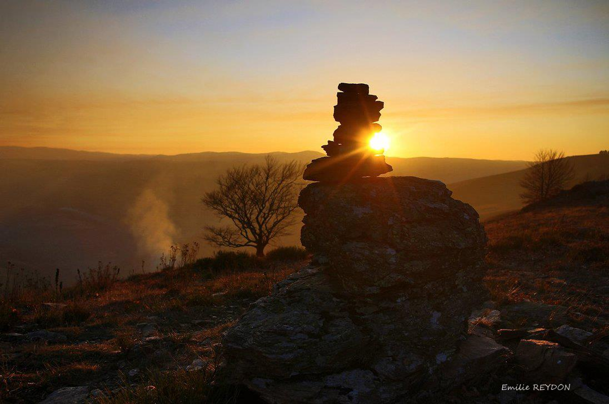
Ce que la communauté fait pour vous
Les services les plus consultés, rangés par besoin. Chaque ligne mène à la page qui donne les horaires, les lieux et les contacts.
À la une
Toutes les actualités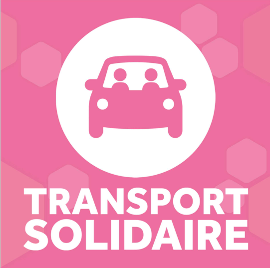
Transport solidaire : le réseau cherche des chauffeurs bénévoles
Le transport solidaire du sud-est Lozère conduit les habitants à leurs rendez-vous médicaux. Il a besoin de nouveaux bénévoles.
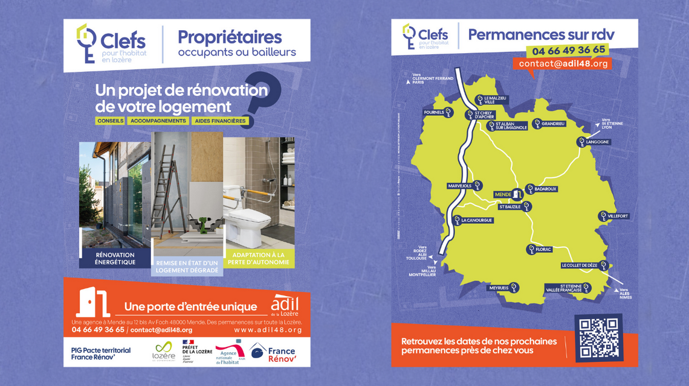
Clefs pour l'habitat en Lozère : les aides pour rénover
Permanences au Collet de Dèze, à Saint Étienne Vallée Française, à Florac et à Villefort.
Le Vent des Bancels
Le journal du territoire, à feuilleter en ligne ou à télécharger. Les numéros sont conservés depuis le n°94, avec le bulletin communautaire.
Dix-neuf communes
Choisissez une commune pour voir ce qu'elle accueille : France services, micro-crèche, maison de santé, médiathèque, bureau d'information touristique.
- Bassurels
- Gabriac
- Le Collet de Dèze
- Le Pompidou
- Moissac Vallée Française
- Molezon
- Pont de Montvert, Sud Mont Lozère
- Saint André de Lancize
- Saint Étienne Vallée Française
- Saint Germain de Calberte
- Saint Hilaire de Lavit
- Saint Julien des Points
- Saint Martin de Boubaux
- Saint Martin de Lansuscle
- Saint Michel de Dèze
- Saint Privat de Vallongue
- Sainte Croix Vallée Française
- Ventalon en Cévennes
- Vialas
Commune avec un service de proximitéCommune choisie
Le territoire en images
Accéder aux galeries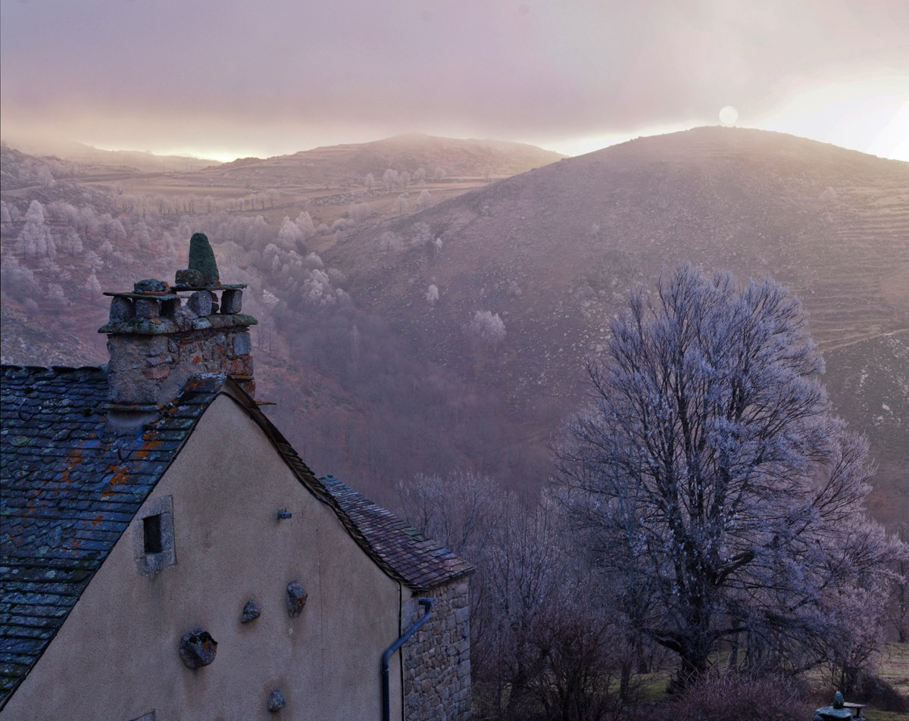
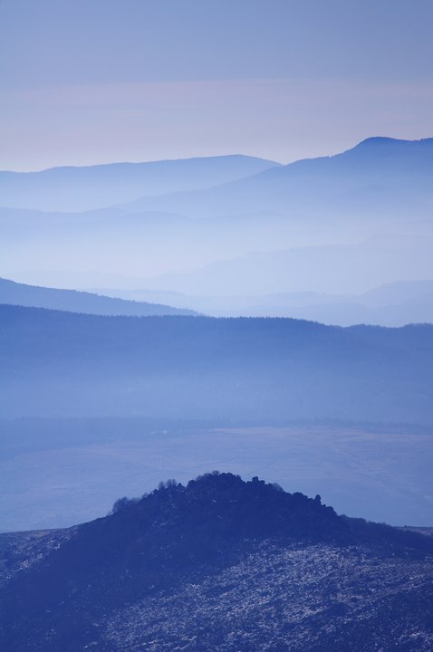
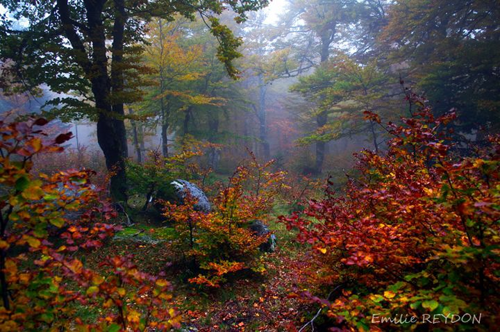
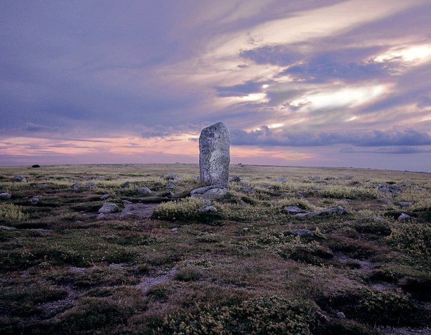
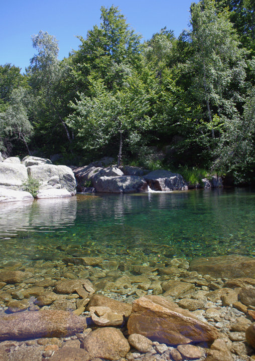
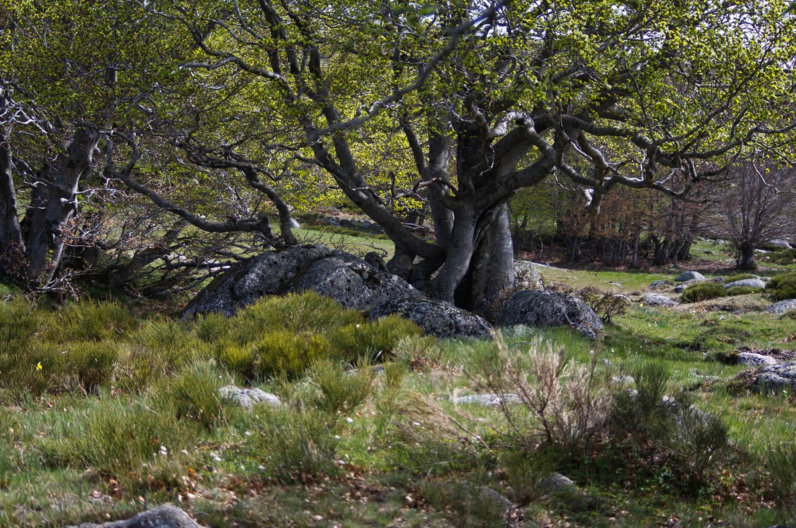
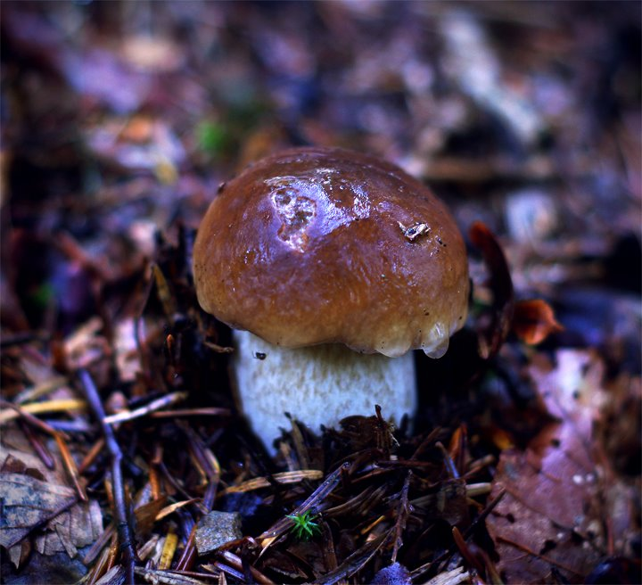
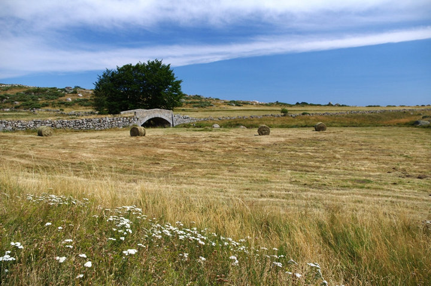
Photographies d'Émilie Reydon.